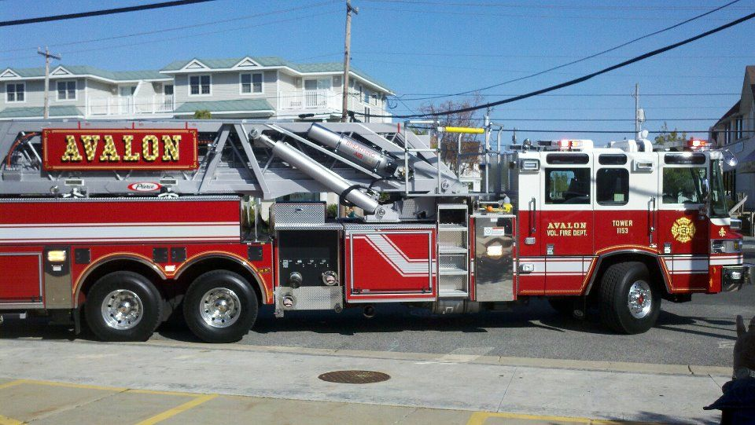

TOWER 1153
2012 Pierce mid-mount platform
- Reach
- 95 ft
- Type
- Mid-mount platform
- In service
- April 13, 2012
Our 95-foot platform has the longest reach on the island. Tower 1153 arrived on April 13, 2012, replacing Truck 1163.